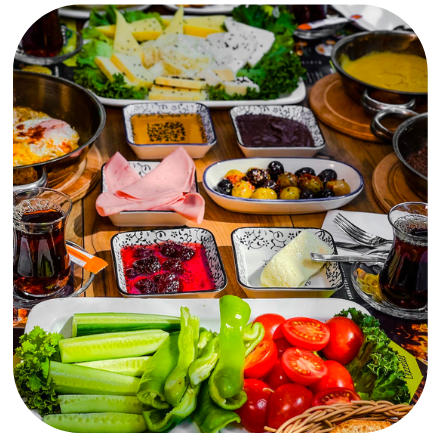
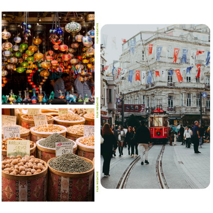

Izmir is one of the major tourist destinations in Turkey, attracting people for its flavourful
cuisine, souvenir shops, open-air and
free museums, and stunning views of the Aegean Sea.
Foodie's paradise
Dine like a native! Enjoy sweet baklavas, mezze platters, or other delectable Turkish
treats. Izmir has got it all. It will sure to make you feel at ease, whether of your preference
for fancy dining or enjoying a delicious kebab from a street food vendor.


Vibe like a local
Compared to the complexity of Istanbul, İzmir is more of a laid-back city. Get together with some
friends and simply take in the atmosphere of this fantastic city while gazing out over the
Aegean Sea and taking a seat on the grass in Alsancak Kordon; which is İzmir's
waterfront, one of the most beautiful spots on the whole coast.